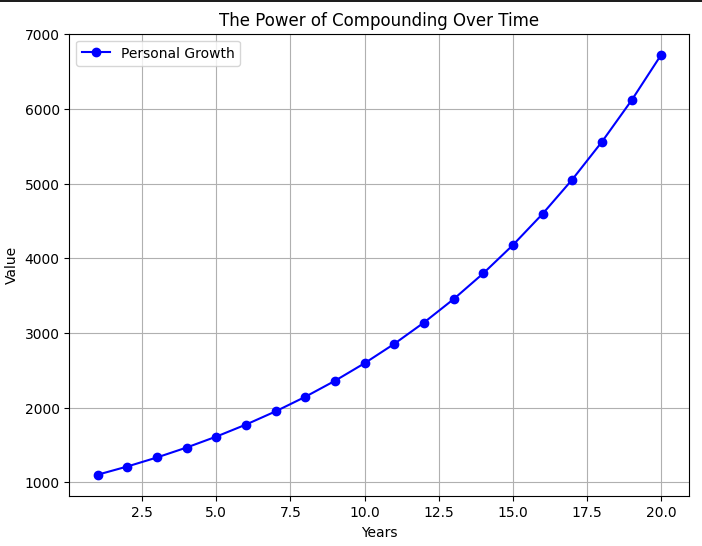
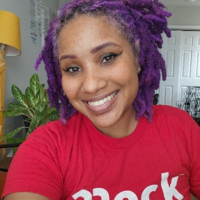
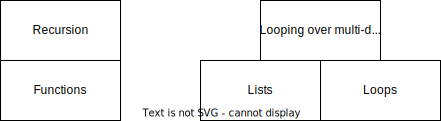
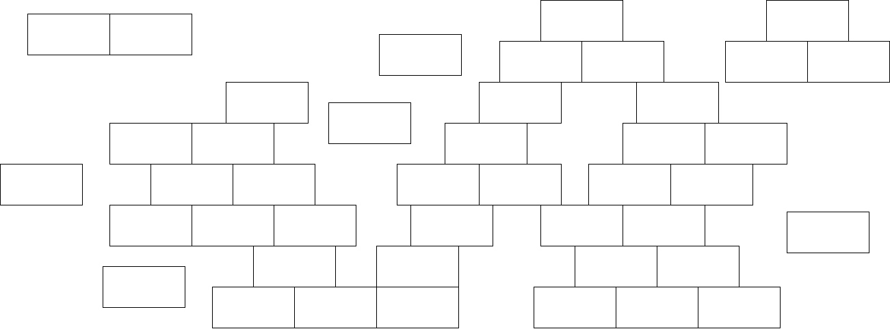

Links (1/2)
- Guild of educators
- Sheena's blog
- Mastodon: @sheena@fosstodon.org
- X/Twitter: @sheena_oconnell
To navigate this slide deck: Use cursor keys or click on arrows on bottom right. Use Esc key to toggle overview
Links (2/2)
Power to the people
Who teach the people
To code
Hi, I'm Sheena
🧗♀️🏕️🧭🇿🇦🖊️🛠️🔥🐕🎸🙃
|
 |
Education work
- Training and mentoring learners
- Training and mentoring teachers
- Science of learning => Engineering of learning
- Building the stuff
- Human processes
Passionate about empowering those who empower others
When it comes to education everyone is an expert
...well... no not reallyCommon practices
- Reading and re-reading
- Passively watching videos
- Memorization and pattern-matching over understanding
Why?
- When learning feels hard, people lose faith
- Learning how to learn is a whole thing
Learning how to learn effectively => Compounding effect
Make it stick == brilliant book
Goals
- Teaching ++
- Learning ++
- Inspire people to try teaching
Dawn Wages
|
 |
"The Django community and specifically Django Girls at DjangoCon US started career as a programmer."
A perfectly normal classroom
- A bunch of learners
- Steep teacher : learner ratio
- Sage on the stage
- Projects and tests at certain times (eg: quarterly exam)
- Everyone at the same pace
A perfectly normal classroom

Improving pass rates
- Lower expectations on learners
- Improve quality of education
Bloom's 2 sigma problem
"The average student tutored one-to-one using mastery learning techniques performed two standard deviations better than students educated in a classroom environment"
Let's always do that!
Mastery learning techniques

Skills stack on top of skills
Skills stack on top of skills ...a lot
One to one?
- More engaging for the learner: No gazing out the window
- The teacher can focus on one learner and what they need
Lectures and classrooms...
- Hard to get right
- Hard to know if you are doing a good job
- Still useful
Mastery based learning => Mastery of teaching
"Education is Not the Filling of a Pail, but the Lighting of a Fire"
All we have is time

What is teaching?
- knowledge transfer?
- answering questions?
- solving problems?
Teaching is planting seeds

Goal
Set a learner up so that they continue to learn and grow on their ownAt the end of a good "class" a learner should...
- Feel that it is worth getting good - enthusiasm / curiousiosity
- Feel confident that they can move forward
- Know what steps to take
- Be able to take those steps
Growth mindset vs Fixed mindset
- Fixed Mindset == Belief that you either have it or you don't
- Growth Mindset == Belief that you have the ability to grow and learn
Huberman Lab podcast
People with a growth mindset...
- Don't take failure personally - it's a lesson
- Look at a struggle positively
- More willing to seek out help (instead of hide deficiencies)
- Less judgemental when others struggle
- A lot more
It's a spectrum
It's a lot of spectrums
Foster a growth mindset in...
- The people you teach: it amplifies their rate of growth
- Yourself as a teacher: You can become a better teacher
Mastery based learning
=> Growth Mindset
Zooming in
Meta... what?
Awareness and understanding of one's own thought process. Thinking about thinking.Practically speaking...
- Help the learner be a better learner by teaching them how to learn
- Some teaching techniques are more powerful than others
Assess 🧪
- Be a detective/mind-reader/scientist
- Maintain good signal to noise ratio
- We are training coders, not parrots
- What will the code PRINT
Illuminate 🪙
- Try to be a guide rather than give a mini lecture
- In your pocket
- Trust no one!
=> Catalyse further growth 🪴
- Retrieval practice
- Push it further
- Learning is hard!
Foundational practices and mindsets
- The opportunity to be wrong
- Psychological safety
- Celebrate small wins
- You can do this yourself!
The protégé effect
- Preparation to teach
- Actual teaching => retrieval practice
- Learners ask questions => low stakes testing
- Learners ask weird questions => mental framework building
The guild of educators
- Empower educators by spreading:
- Skills
- Opportunities
- Initial focus: Volunteer-run Python education
- Join us
- Support us
Learning sprint
- Django
- HTMX
- Playwright
- TailwindCSS
- Maybe AlpineJS
Are you keen?
Homework!
|